Node-to-node Cluster Fault Tolerant Routing in Star Graphs
Qian-Ping Gu, Shietung Peng
Information Processing Letters Vol. 56, pp. 29-35, 1995
Abstract
In this paper, we give an algorithm which, given at most
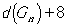
in O(|F|+n) time and a fault-free path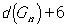
in O(n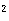
) time, where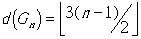
is the diameter of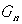
and F is the set of total faulty nodes.
Cluster fault tolerant(CFT) routing is a natural extension of conventional node fault tolerant routing mode. In CFT routing, routing problems are considered under the situation that a certain number of cluster of G failed. For a particular routing problem in an n-connected graph, how many faulty clusters and how large of those clusters can be tolerated are studied in CFT routing.
Lemma 2
. For distinct nodes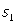
and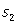
in the same port-set of a substar,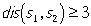
Lemma 4
. For any node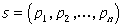
in and any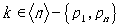
, there are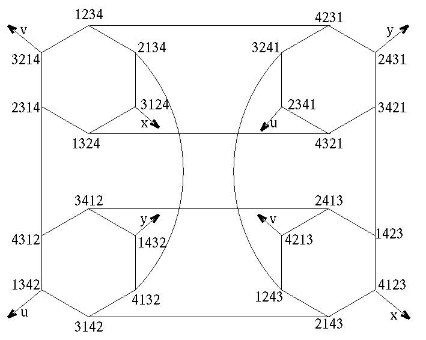
Example
. Let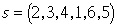
and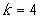
. Then the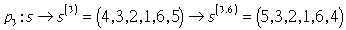
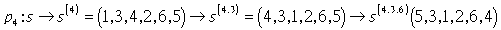
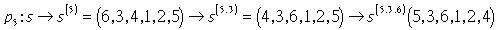
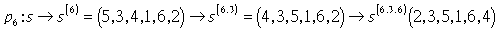
Lemma 6
. Given and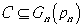
with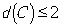
and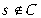
, C can block at most one of the n-2 paths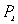
,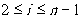
, given in Lemma 4.
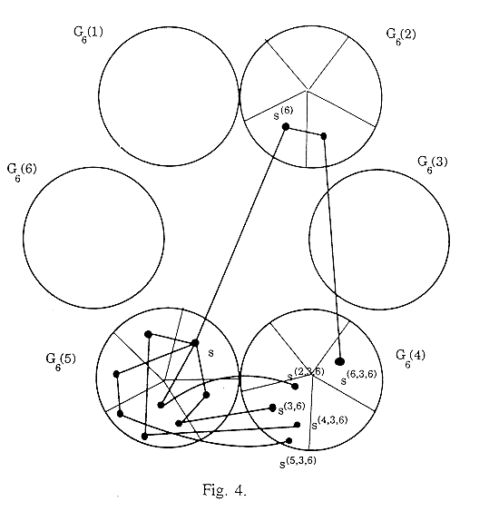
2. Routing Algorithm
Algorithm
Input: Fault clusters 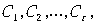 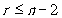
Output: A fault-free path 
begin
For each
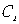
,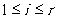
, find the center node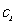
of ;For
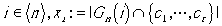
and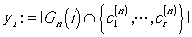
;Find a substar
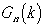
, s.t.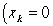
and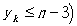
;Enumerate the
to find the fault-free routing path
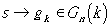
of length at most 3.Enumerate the
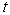
toto find the fault-free routing path
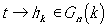
of length at most 3.Connect
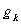
and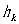
in by a fault-free shortest path;end
Lemma 7
. Given at most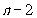
faulty nodes and non-faulty nodes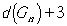
that connects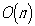
time.
Lemma 8
. Given a set F of faulty clusters with |F|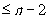
and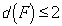
, and two distinct non-faulty nodes s and t in , Algorithm I finds a fault-free path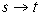
of length at most in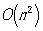
time.
Proof:
Case(1): if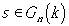
, then the path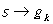
has been found.Case(2): if
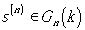
. Since the faulty nodes in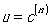
, where is the center node of some cluster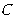
, andCase(3): assume that
Therefore, there is no center node of any faulty cluster in the substar
which contains . We have nodes and , , are fault-free. Similarly, is also fault-free.Therefore,
It takes to find the center nodes of faulty clusters. By checking the last digits of and , and can be computed inIt is known that given any nodes
and in , there are node disjoint paths of length at most connecting and . Therefore, a fault-free path
Da Created by: Tung-Hsing Liu
te: Mar. 1 1997
e-mail: para@ibm15.math.nsysu.edu.tw